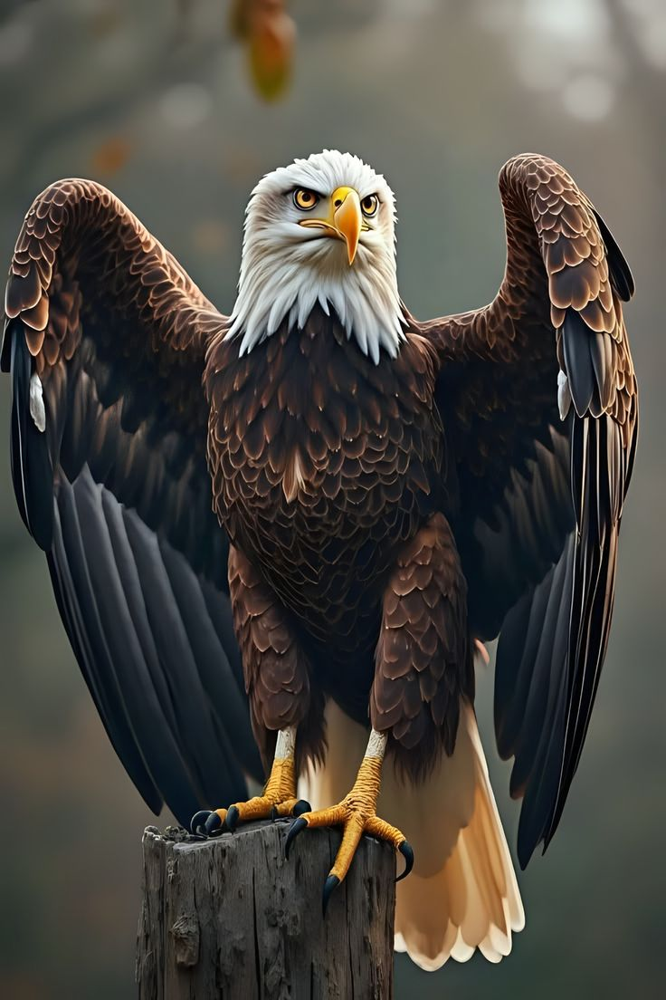
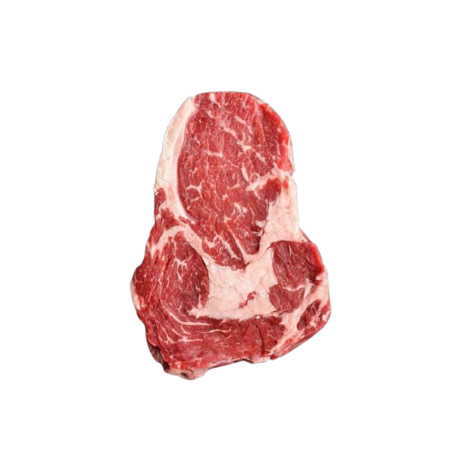

elang
sumber gambar: pinterest
suara elang 🦅
sumber audio: TikTok
🦅 ciri-ciri Elang
aku adalah elang. elang bisa terbang tinggi. mata elang sangat tajam.
 mata dan paruh elang
mata dan paruh elang
 cakar elang
cakar elang
 sayap elang
sayap elang
🍗 makanan elang
 tikus
tikus
 kelinci
kelinci
 burung
burung
 ikan
ikan
🍗 berburu makanan
Tonton video lainnya🏞 tempat tinggal elang
 pegunungan
pegunungan
 hutan lebat
hutan lebat
 padang rumput
padang rumput
📚 elang makan apa?

makan
:strip_icc():format(jpeg)/kly-media-production/medias/3135854/original/049528400_1590263259-collection-vegetables-isolated-white-background_44074-1573.jpg) tidak makan
tidak makan
 tidak makan
tidak makan